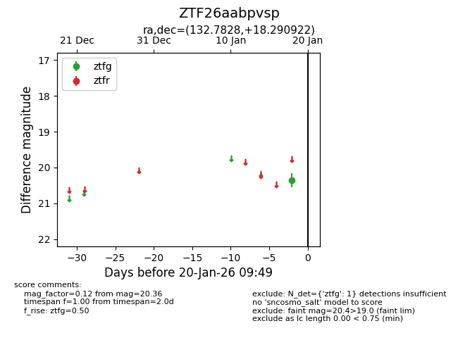
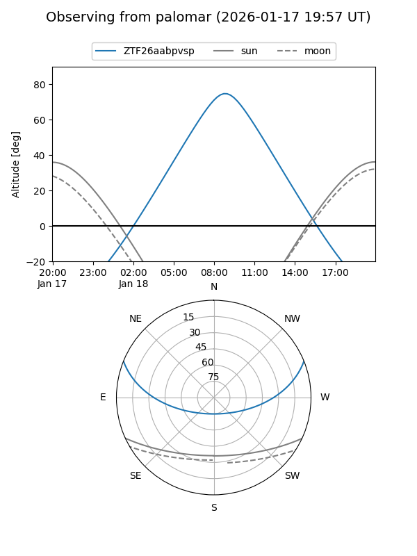

ZTF26aabpvsp
Target ZTF26aabpvsp at 2026-01-18 09:50
Aliases and brokers:
FINK: link
Lasair: link
ALeRCE: link
alt names
ZTF26aabpvsp (ztf,fink_ztf)
Coordinates:
equatorial (ra, dec) = 132.7828,+18.29092
equatorial (HMS+DMS) = 08:51:07.88,+18:17:27.32
galactic (l, b) = (208.5301,+34.37718)
Flags:
Photometry:
last ztfg=20.36
1 ztfg detections
Lightcurve

Visibility


Additional plots